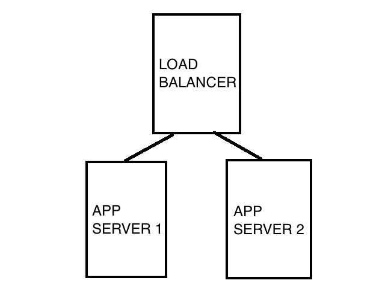
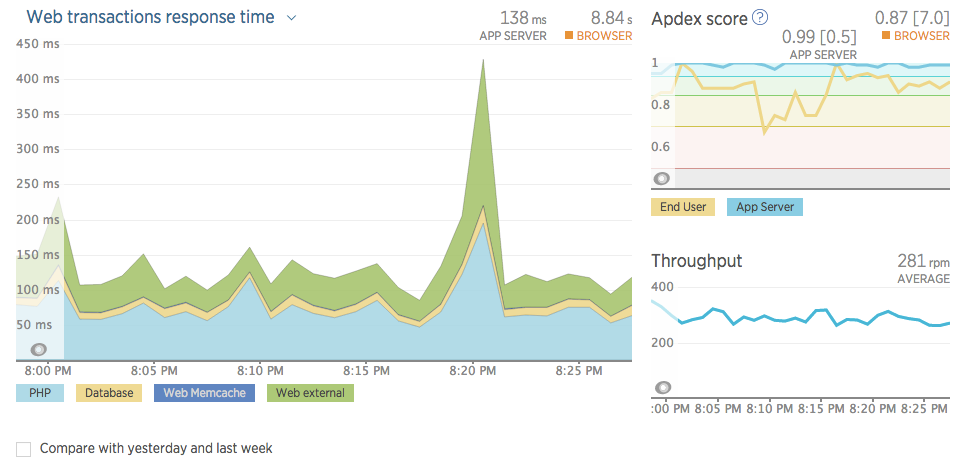

Building a Highly Scalable, Secure Django Site
Joseph Mosby
@josephmosby
Quien soy?
- Python engineer at National Journal
- Former government cybersecurity auditor
- Classic computing aficionado
- Spanish student
Our Agenda
- Deploy gracefully
- Secure servers
- Segment environments
- Scale the environment
- Gotchas
- Tools
Deploy: What Most of Us Do
- Just do what Heroku says (good!)
- git pulls / Fabric
- FTP
- Continuous
Deploy: Recommendations
- Aim for a single, repeatable, easy-to-execute deploy step
- Example: we `git force checkout` as part of a production push.
- Scheduled versus continuous is heavily influenced by discipline and politics
note: we use scheduled because it helps us adhere to the social contract we have with our organization.
Secure: What Most of Us Do
- Trust the hosting provider
- Developers have root access and app superuser access
- Diligently change our passwords every 90 days
Secure: Recommendations
- Keep sensitive data off of your public servers as much as possible
- Restrict everyone's access, *especially* developers
- developers know just enough to get themselves and the server into trouble
- the larger the attack surface, the higher the risk
- Contingency plans on contingency plans
- Bring non-devs into the risk analysis
- If running multiple apps off same server, run them with users that can only see their own directories
Segment: What Most of Us Do
- "my local machine is dev"
- "the server I push to is prod"
Segment: Recommendations
- dev (copy of prod environment) / stage / production
- subsegment production based on data classification
Scale: What Most of Us Do
- Just do what Heroku says (good!)
- Handle it when it becomes a problem (bad!)
Scale: Recommendations

Gotchas
- Storing images locally
- Django admin
- Out of control queries
Out of control queries
# Bad
def lots_of_queries(self):
members = Members.objects.filter(committee='Ways and Means')
for member in members:
# this is a new DB query
# each iteration
chief_of_staff = member.chief_of_staff
print(chief_of_staff.name)
return members
# Good
def few_queries(self):
members = Members.objects.filter(committee='Ways and Means')
# yay
members = members.select_related('chief_of_staff')
for member in members:
chief_of_staff = member.chief_of_staff
print(chief_of_staff.name)
Tools
- Django Debug Toolbar
- New Relic
- Sentry
- Supervisor
- Flower
Django Debug Toolbar

New Relic

Sentry

Supervisor

Flower

Gracias!
/
#